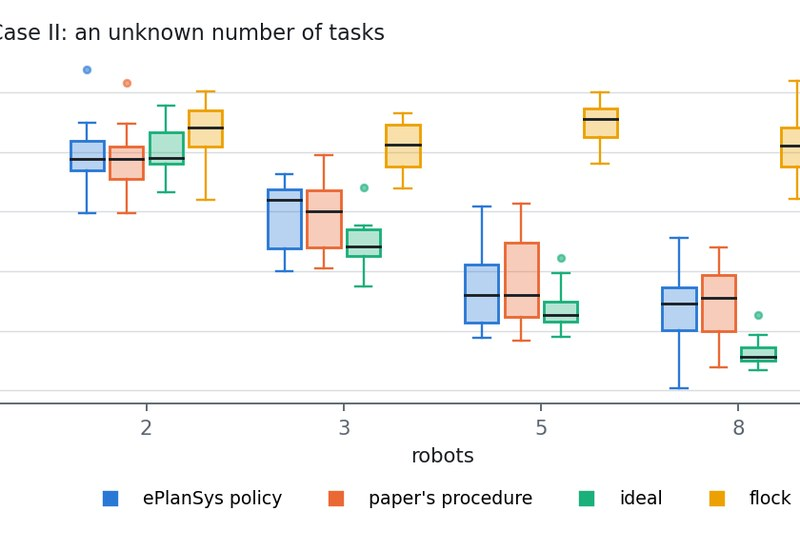
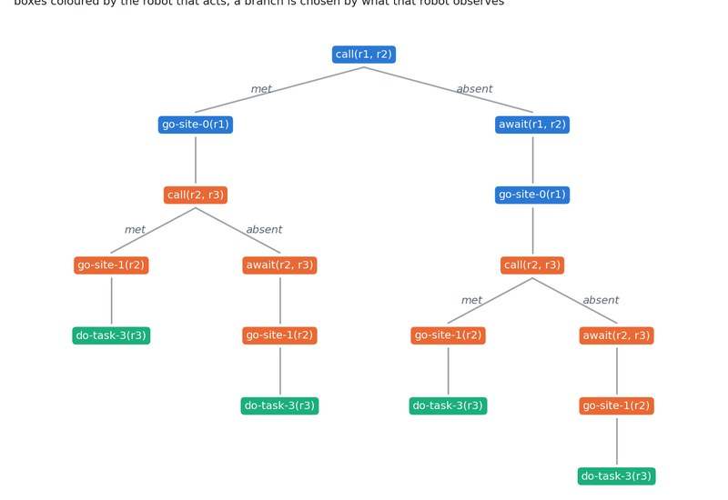
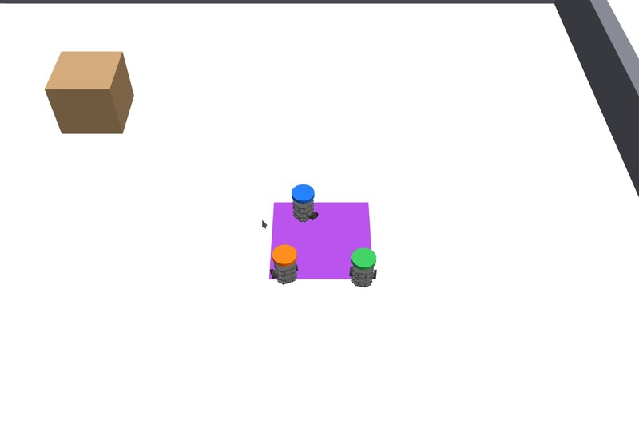
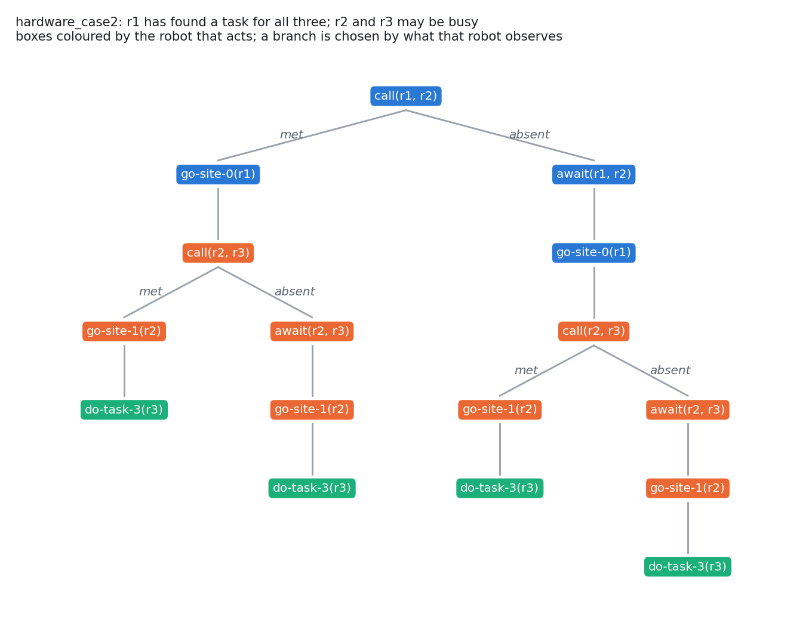
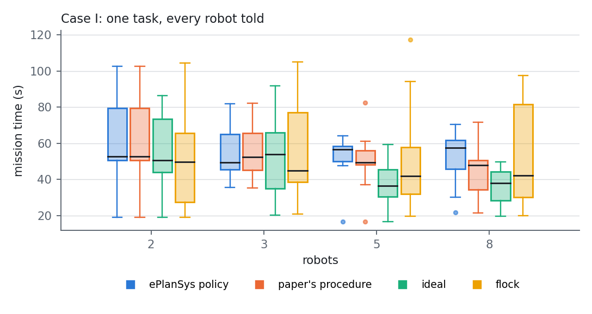
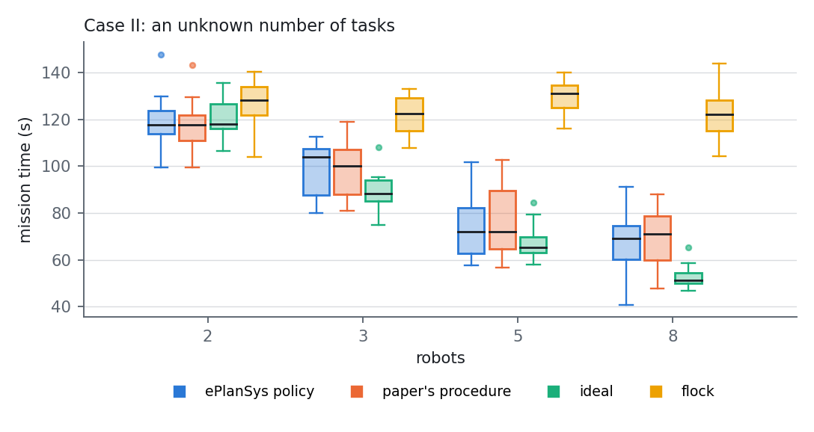
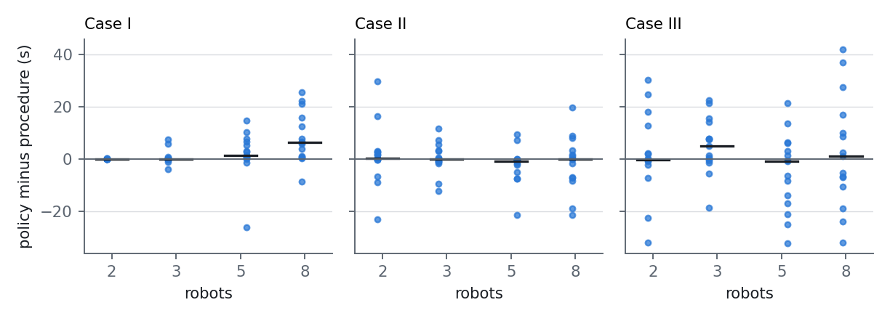
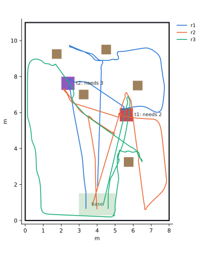
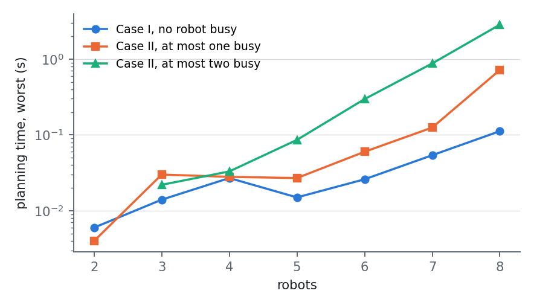

After Bramblett and Bezzo (2023) · coverage out of contact · common belief · empathy · gossip · knowledge preconditions · joint policies · ROS 2
Bramblett and Bezzo[1] let a team of robots break radio contact to cover an unknown area faster. While in contact the robots share what they know; from then on each robot propagates, alike, one particle per robot, the common belief, and tracks its own, so that it stays where the others believe it to be (the paper's empathy). A robot that finds a task needing several robots allocates it by auctions, bidding for the robots out of contact from its belief about them, and tells the robots it needs by going to their particles (the paper's gossip). The paper writes the state in dynamic epistemic logic and compares its method with a team that never leaves radio range and one with unlimited radio, in simulation and on ROSbots in its laboratory.
This page recreates the paper in three parts. Its simulation study, in a kinematic simulator: fifteen areas, teams of two to eight, its two cases and its three methods, 720 runs. The decision a robot makes when it finds a task, written as an EPDDL planning task: Aletheia plans it, and ePlanSys executes the policy. And its laboratory experiments, with three TurtleBot3 robots in Gazebo, ePlanSys's planner and executor in the loop, 96 runs. A formal analysis states the model and proves what holds of it: the paper's update rules, what its rule for disconnected robots does when read literally, when the planning task is solvable, and where two policies can wait for each other forever.
In the kinematic study the paper's ordering reappears, with gaps of 8.1 and 34.4 s in Case II against its 16 and 35; the policies, all 320 found in at most 0.31 s, are at parity with the procedure where tasks compete and slower where everyone must be told. In Gazebo 96 of 96 runs ended with every task done. Every canonical policy satisfies the paper's update rules in every world and can be followed by every robot on what it observes; under the literal reading of the paper's rule for disconnected robots, a task that needs news to pass through a robot, or a wait for a busy one, has no policy with consistent beliefs at all.
Package gossip_coverage_demo; domain gossip-coverage; policies from eplansys, search by Aletheia. Full account, with the proofs, in Gossip Out of Contact (PDF).
The runs
| take | world | what happened when the task was found | mission |
|---|---|---|---|
| epistemic | case 1, seed 3 | r2 finds t1 (needs 2); r2 plans with ePlanSys; r2 tells r1; r1 tells r3; t1 done at 175 s | 213.3 s |
| proposed | case 1, seed 3 | r2 finds t1 (needs 2); r2 allocates; r2 tells r3; r2 tells r1; r3 allocates; t1 done at 121 s | 157.3 s |
| epistemic | case 2, seed 2 | r3 finds t2 (needs 3); r3 plans with ePlanSys; r3 tells r2; t2 done at 94 s; r2 finds t1 (needs 2); r2 plans with ePlanSys; t1 done at 166 s | 264.4 s |
| flock | case 1, seed 3 | r3 finds t1 (needs 2); t1 done at 69 s | 107.7 s |
What the recreation shows

The simulation study The paper's comparison reproduced Over 720 runs the procedure lies between the ideal method and the flock as the paper reports: in Case II 8.1 s slower than the ideal method and 34.4 s faster than the flock, against the paper's 16 and 35. The ePlanSys policy is at parity with the procedure where tasks compete, and slower where everyone must be told. See the study →
Formal analysis The rules as theorems, and where they fail The paper's update rules hold as properties of the product update. Read literally, its rule for disconnected robots breaks the equivalence of knowledge and belief it assumes, and no policy keeps beliefs consistent. Waiting for a busy robot is sound only if that robot comes back, which two policies at once can prevent. See the analysis →
The laboratory experiments ePlanSys plans and executes the gossip 96 of 96 Gazebo runs ended with every task done. The policies, planned when a task is found and run by ePlanSys's executor, end their missions a median of 0.6 s later than the paper's procedure in Case I and a median of 0.4 s earlier than it in Case II. See the runs →The paper
The paper poses two problems: a distributed policy by which \(N_r\) robots cover a partly unknown area with intermittent communication, and a distributed policy that allocates the tasks they find when an allocation may need robots out of contact. A task has a place, the number \(N_\tau\) of robots it needs at once, and a reward. Robot \(i\) keeps particles \(p^i_{j,k}\), its belief about robot \(j\)'s belief about robot \(k\); its empathy particles \(p^i_{j,i}\) are what the others believe of it. When all are in contact they share their states, maps and tasks, and each robot then propagates the same common belief set \(C^i\) by the same coverage: every particle claims the frontier points of its Voronoi cell, eq. (9), and goes to the point of least utility, with a penalty \(\Delta\) outside its cell, eqs. (10) to (12). A robot out of contact tracks its own particle.
The action library is \(\{\mathit{perceive}(\varphi), \mathit{announce}(\varphi)\}\); \(K_i\,\mathit{present}(\tau)\) reads "\(i\) knows the place, need and value of \(\tau\)". An announcement reaches the robots in contact, and "disconnected robots' knowledge is not impacted", eq. (18). Two rulesets: a robot sought at its particle and not found is excluded, as busy; and a robot that finds a task it believes a teammate found first leaves it to that teammate. The policy is joint: "robots need to map indistinguishable epistemic states to the same actions". A task found is allocated by a sequential single-item auction (Algorithm 1), reordered for makespan (Algorithm 2), and told by a gossip auction in which a robot told joins the tellers (Algorithm 3).
Its simulations use fifteen random 50 by 50 m areas with 10 to 20 unknown obstacles of 1 m, teams of 2, 3, 5 and 8, robots of 3 m/s with a 5 m lidar. Case I has one task, known to exist; Case II an unknown number. Against a flock that keeps every robot within 10 m and an ideal method with unlimited radio, it reports in Case I that its method is 11 s slower than the ideal one and 13 s faster than the flock on average, with standard deviations of 11, 14 and 48 s, the flock being better with two robots; in Case II, 16 s slower than the ideal method and 35 s faster than the flock. Its experiments run two or three ROSbots in a 4 by 5.5 m laboratory with a sensing and communication range of 1 m.
Correspondence
ePlanSys plans in dynamic epistemic logic[3] itself: the state is a pointed Kripke model, the actions are event models applied by the product update[4], and a policy is searched for over the models they reach[5].
| in the paper | here |
|---|---|
| common belief set \(C^i\), propagated by the coverage | one particle per robot, propagated from the state all last shared, reset when all are in contact and new knowledge is shared; every robot tracks its own |
| world \(w = \{\sigma_i\}\): every robot's status | at its particle; gossiping, \(\mathit{out}\) and \(\mathit{by}\); completing a goal, \(\mathit{sited}\); away on other work, \(\mathit{busy}\), known to that robot alone |
| \(\mathit{announce}\), \(\mathit{perceive}\) | the event model call: met, the announcement between the two in contact, which carries the task; absent, the perception of an empty particle |
| \(K_i\,\mathit{present}(\tau)\) | \(K_i\,\mathit{task}\), a precondition of telling and of going to the site |
| ruleset 1: not found, excluded | the absent event gives \(K_i\,\mathit{busy}_j\); the robot may wait at the particle (await) or leave |
| ruleset 2: believed found by a teammate | not applied: it rests on a belief about a teammate's knowledge that no event out of contact can make knowledge (below) |
| gossip auction, a robot told joins the tellers | a robot calls only teammates whose Voronoi cells border its own, eq. (9); news for a robot further away goes from neighbour to neighbour |
| joint policy | every action branches on what its actor observes (Aletheia's --subjective auto), checked for every policy |
| planning task \(\Pi = (s^i_t, A, \gamma)\) | the EPDDL problem the finder writes from what it knows, when it finds the task |
| MATLAB simulations; ROSbots | a kinematic simulator; three Burgers in Gazebo, with ePlanSys's planner and executor |
Four formulations run on the same robots. The procedure is the paper's framework, with the first ruleset strengthened so that a robot excluded is admitted again after 60 s and a task that cannot be allocated is tried again every 5 s. The ideal method is the procedure with unlimited radio; the flock keeps every robot within range of every other. The epistemic formulation is the procedure with the decision at a task found made by a policy of the planning task below.
The planning task
The finder writes an instance from what it knows: the robots, itself first and the others in the order of the paper's own bid for them; the robots in contact with it, which know of the task; the robots out of contact that may be busy, at most two of them, in Case II (in Case I, with one task known to exist, nobody else can be); the neighbour relation of the Voronoi partition of where it believes the particles are; and the need \(k\). The initial model has a world for every set of busy robots within the bound, with the task present or not; each robot knows whether it is busy, the finder and the robots in contact know of the task, and nobody else does.
| action | events | the actor | the robot named | everyone else |
|---|---|---|---|---|
| call(i, j) | met, absent | observes which | fully where it is free; unsure where busy | unsure whether anything happened |
| await(i, j) | j comes back | fully | fully | unsure |
| leave(i, j) | one | fully | unsure | |
| go-site-n(r), do-task-k(r) | one | fully | unsure | |
(:event e-met :parameters (?i ?j - agent)
:precondition (and (near ?i ?j) (not (out ?i)) (not (sited ?i)) (not (busy ?i)) ([?i] (task))
(not (busy ?j)) (not (out ?j)) (not (sited ?j)) (task)) ; the call carries the task
:effects (:and (called ?i ?j)))
(:event e-absent :parameters (?i ?j - agent)
:precondition (and (near ?i ?j) (not (out ?i)) (not (sited ?i)) (not (busy ?i)) ([?i] (task)) (busy ?j))
:effects (:and (out ?i) (by ?i ?j))) ; i stays at j's particle
(:action call :parameters (?i ?j - agent | (/= ?i ?j))
:action-type (hail (e-met ?i ?j) (e-absent ?i ?j) (nil))
:observability-conditions (:and (?i Fully) (?j (if (busy ?j) Unsure else Fully)) (default Unsure)))
(:event e-await :parameters (?i ?j - agent)
:precondition (and (by ?i ?j) (busy ?j) (task) ([?i] (busy ?j))) ; it comes back, and hears
:effects (:and (not (busy ?j)) (not (by ?i ?j)) (not (out ?i)) (called ?i ?j)))
A robot goes to the site only when it knows of the task; the counter \(c_0, \ldots, c_8\) says how many have gone, and the arrival that makes as many as the task needs does it. The goal is \(\mathit{done}\), and in Case I also \(K_a\,\mathit{task}\) for every robot \(a\): every robot must learn that the one task has been found, and those it does not need go home.
A policy
The instance hardware_case2 is the paper's Fig. 11 at the moment its second task is found: robot \(r_1\) finds a task that needs all three robots, and the other two may be away on the first. Aletheia, with its replanning strategy, subjective branching and consistent beliefs required, returns in 0.01 s:

call_r1_r2
[e-met]
go-site-0_r1
call_r2_r3
[e-met]
go-site-1_r2
do-task-3_r3
[e-absent]
await_r2_r3
go-site-1_r2
do-task-3_r3
[e-absent]
await_r1_r2
go-site-0_r1
call_r2_r3
[e-met]
go-site-1_r2
do-task-3_r3
[e-absent]
await_r2_r3
go-site-1_r2
do-task-3_r3
In each of the four designated worlds, tools/check_policy.py replays the policy through the product update and evaluates the paper's rules at the actual world after every step. In the world where both teammates are busy:
| step | event | who knows of the task | worlds r1 / r2 / r3 consider |
|---|---|---|---|
| start | r1 | 4 / 4 / 4 | |
| call_r1_r2 | e-absent | r1 | 2 / 6 / 6 |
| await_r1_r2 | e-await | r1, r2 | 2 / 2 / 7 |
| go-site-0_r1 | e-site-0 | r1, r2 | 2 / 4 / 11 |
| call_r2_r3 | e-absent | r1, r2 | 4 / 2 / 15 |
| await_r2_r3 | e-await | r1, r2, r3 | 5 / 2 / 4 |
| go-site-1_r2 | e-site-1 | r1, r2, r3 | 9 / 1 / 6 |
| do-task-3_r3 | e-last-2 | r1, r2, r3 | 11 / 2 / 2 |
An unanswered call tells \(r_1\), and nobody else, that \(r_2\) is busy; \(r_1\) waits at \(r_2\)'s particle, because a robot away on other work comes back to where the others believe it to be; once told, \(r_2\) carries the task to \(r_3\). AO* finds a policy of the same depth, 7.
Formal analysis
The report states the model and proves each claim; here are the statements. \(\mathcal{M}\otimes\mathcal{E}\) is the product of a model and an event model; a Fully observer tells the events apart, an Unsure one considers every event of the action possible, the null one included, and an oblivious one believes the null event happened.
The simulation study
The kinematic simulator runs the paper's setting: fifteen areas with 10 to 20 unknown obstacles of 1 m, the same for every team, case and formulation; robots of 3 m/s with a 5 m range sensor and process noise of 0.2 m/s; particles of 2.7 m/s, so that a robot that detours can catch its own; a 10 m radio. A mission ends when every task is done and every robot is home, and in Cases II and III when the whole area has been seen. Case III, which is not in the paper's simulations, has tasks that need more robots in all than the team has, as in its laboratory experiment of Fig. 11.


| Case I, paper | Case I, here | Case II, paper | Case II, here | |
|---|---|---|---|---|
| procedure minus ideal, mean | 11 s | 7.4 s | 16 s | 8.1 s |
| flock minus procedure, mean | 13 s | 0.1 s | 35 s | 34.4 s |
| standard deviation, ideal / procedure / flock | 14 / 11 / 48 s | 16 / 16 / 27 | 7 / 12 / 9 |
The paper's ordering reappears. In Case II the procedure lies between the ideal method and the flock at every team size and approaches the ideal method as the team grows, while the flock does not improve with the team; in Case I the flock is better than the procedure with two robots (mean 53.1 against 62.7 s) and worse with eight (53.1 against 44.6 s), though with eight its median is the lower (42.2 against 47.8 s): its spread is the largest, a standard deviation of 27 s against 16, which is the paper's own observation about the flock. The two gaps of Case II are 8.1 s and 34.4 s against the paper's 16 and 35. Absolute times are higher than the paper's (the ideal method averages 46 s in Case I and 82 s in Case II over the four team sizes, where the paper's figures show about 32 and 40 s): the frontier coverage here leaves more ground to come back for than the paper's MATLAB code, which is not published. Means in seconds, fifteen areas per cell:

Over the 12 cells of case and team size, the median difference lies between −0.9 and +6.5 s. In Cases II and III the two are at parity: the mean difference per cell lies between −4.9 and +5.2 s, with 47 areas where the policy is faster by more than half a second, 22 ties and 51 where it is slower. In Case I, where every robot must be told, the policy is slower as the team grows (median +1.4 s with five robots and +6.5 s with eight): Aletheia minimises the number of steps, and its cascades follow the neighbour relation, where the paper's gossip auction weighs travel times. Every one of the 320 policies the study asked for was found, in 0.032 s on average and 0.31 s at most.
| case | robots | ideal | procedure | flock | epistemic | epistemic minus procedure, median | faster / tie / slower |
|---|---|---|---|---|---|---|---|
| I | 2 | 55.9 | 62.7 | 53.1 | 62.7 | +0.0 | 0 / 15 / 0 |
| I | 3 | 53.3 | 55.1 | 57.6 | 55.7 | +0.0 | 2 / 10 / 3 |
| I | 5 | 38.0 | 50.9 | 50.0 | 52.8 | +1.4 | 2 / 2 / 11 |
| I | 8 | 36.3 | 44.6 | 53.1 | 52.8 | +6.5 | 1 / 2 / 12 |
| II | 2 | 121.0 | 117.8 | 126.3 | 119.1 | +0.3 | 3 / 5 / 7 |
| II | 3 | 89.0 | 99.0 | 121.9 | 99.4 | +0.1 | 6 / 3 / 6 |
| II | 5 | 67.4 | 76.5 | 130.0 | 74.4 | -0.8 | 8 / 5 / 2 |
| II | 8 | 52.5 | 69.1 | 121.7 | 67.7 | +0.1 | 6 / 3 / 6 |
| III | 2 | 127.3 | 123.1 | 126.0 | 124.8 | -0.1 | 5 / 4 / 6 |
| III | 3 | 100.9 | 103.9 | 124.0 | 109.0 | +4.9 | 4 / 1 / 10 |
| III | 5 | 72.0 | 95.6 | 131.3 | 90.8 | -0.9 | 8 / 1 / 6 |
| III | 8 | 56.6 | 79.7 | 128.6 | 82.5 | +1.1 | 7 / 0 / 8 |
The laboratory experiments
The arena is the paper's laboratory at twice its size: 8 by 11 m, with five crates of 0.5 m that the robots do not know of, standing a metre or more from every wall, and the base at the south wall; a robot is home once it is within a metre of the base's centre, and goes on to its own place there. Sensing and radio reach 2 m, and the particles move at 0.13 m/s; every length of the coverage is the study's scaled by the ratio of the sensing ranges. Case I is the paper's Fig. 10, one task for two robots or all three; Case II its Fig. 11, a task for two robots that takes 40 s at the site and a task for three, the seed's placements screened in the kinematic simulator until the three-robot task is found while the two-robot task is being done.

Under the epistemic formulation the finder's instance is grounded by plank, loaded into ePlanSys's epistemic state, planned by its planner through the Aletheia plugin, and run by its epistemic executor with parallel dispatch, as its scheduler arranges the policy. Every action reaches the mission through a relay and is answered with the event that occurred, by which the executor takes the branch and updates its model. When all three robots come into contact, the common belief is reset and the allocation is made with everything known, under every formulation; a policy still running is ended there and its task finished under that allocation. One executor runs one policy at a time, so a task found while a policy runs waits for it.
| case | formulation | runs ended | mean | median | max | tasks done by, mean |
|---|---|---|---|---|---|---|
| I | epistemic | 12 / 12 | 149.7 | 147.8 | 261.4 | 113.3 |
| I | proposed | 12 / 12 | 137.1 | 144.0 | 218.5 | 101.6 |
| I | ideal | 12 / 12 | 120.2 | 121.2 | 180.1 | 84.0 |
| I | flock | 12 / 12 | 131.3 | 120.4 | 298.0 | 94.7 |
| II | epistemic | 12 / 12 | 301.0 | 309.9 | 391.4 | 160.8 |
| II | proposed | 12 / 12 | 318.8 | 324.6 | 450.3 | 163.8 |
| II | ideal | 12 / 12 | 294.1 | 279.9 | 389.4 | 135.2 |
| II | flock | 12 / 12 | 383.4 | 372.4 | 447.6 | 174.2 |
96 of 96 runs ended with every task done and every robot home. Against the procedure, the epistemic formulation's mission time differs by a median of +0.6 s in Case I and −0.4 s in Case II (faster, tied and slower in 3, 3 and 6 seeds, and in 6, 1 and 5); the mean differences, +12.6 and −17.8 s, are carried by a few seeds each, and a sign test separates neither case (p = 0.51 and 1.00). ePlanSys planned 23 policies, each loaded, planned and handed to the executor in 0.40 s at most, and every call was answered with the event that occurred. Of them, 6 ran to their end and 16 were ended when all three robots came into contact, and the allocation made with everything known took their remaining steps: in 11 of them the policy had already told and sent all three robots, which met on their way to the site, and in the others contact came during a call. One policy failed, in Case I with seed 10: a robot that was not busy had fallen 2.5 m behind its particle among the crates, so the call found nobody where the finder's model allowed no absence (the hypothesis of Proposition 9 failed). ePlanSys's epistemic state refused the outcome, the finder planned again with the robot it had told left out, and the new policy did the task. In Case II the flock, which never leaves radio range, is the slowest by 48 s in median, since the whole arena must be seen; in Case I, where the one task is near, the medians run the flock 120, the ideal method 121, the procedure 144, the ePlanSys policy 148 s.
Scaling
Every instance of 159, for teams of two to eight, needs of two, three and the whole team, and up to two robots possibly busy, was solved; the slowest, 8 robots with a task for 8 and at most 2 busy, in 2.8 s, over 58 worlds and 296 ground actions. For teams of up to four, AO* found policies of the same depth in 47 of 51 instances, so the replanning strategy's policies there are of least depth. Every policy attains the least worst-case depth of the analysis exactly: \((|\mathcal{A}| - 1) + k\) in Case I, \((k-1) + \min(b, k-1) + k\) in Case II, \((|\mathcal{A}| - 1) + b + k\) when the task needs the whole team.

Implementation defects
Limitations
The kinematic simulator is not the paper's code. Its coverage leaves more ground to come back for, so its times are longer; its cases are drawn by its own rules; and its procedure strengthens the first ruleset. Aletheia minimises steps in the worst case, not time: it prefers waiting for a busy robot, one step, to calling another, and its cascades follow the neighbour relation, not travel times, which is the likeliest reason the epistemic formulation is slower in Case I with eight robots. Gazebo runs differ in their timing from one run to the next; with twelve seeds per case the mission times set the flock apart in Case II, but do not separate the procedure from the epistemic formulation. In Gazebo one executor runs one policy at a time, so a task found while a policy runs waits for it. The arena is the paper's laboratory scaled, its sensing is simulated over the arena's map, and the laser only stops a robot short of what is ahead. The analysis is of the planning task at a task found; the coverage, the allocation of several tasks at once and the conventions of Proposition 7 are outside the model.
References
Reproduction
bash tools/validate.sh # the arena, the canonical policies, the update rules, the oblivious reading, the scheduler python3 tools/study.py --out STUDY --cases 1 2 3 --methods ideal proposed flock epistemic # the kinematic study python3 tools/study.py --one 3 5 2 epistemic # one kinematic run, with its events python3 tools/check_policy.py TASK.json POLICY.json # the update rules and implementability, world by world python3 tools/oblivious.py INSTANCE.epddl POLICY.json # the literal reading of eq. (18) python3 tools/scaling.py --out SCALE # teams of two to eight bash tools/run_one.sh 3 2 epistemic RUN 1 # one Gazebo run in its own lane bash tools/batch.sh 1 12 BATCH 5 # every seed, both cases, four formulations python3 tools/analyse.py gazebo BATCH # runs.csv and analysis.json